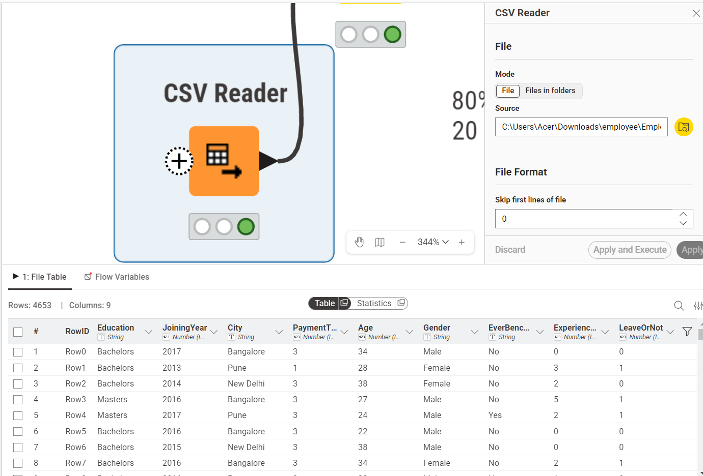
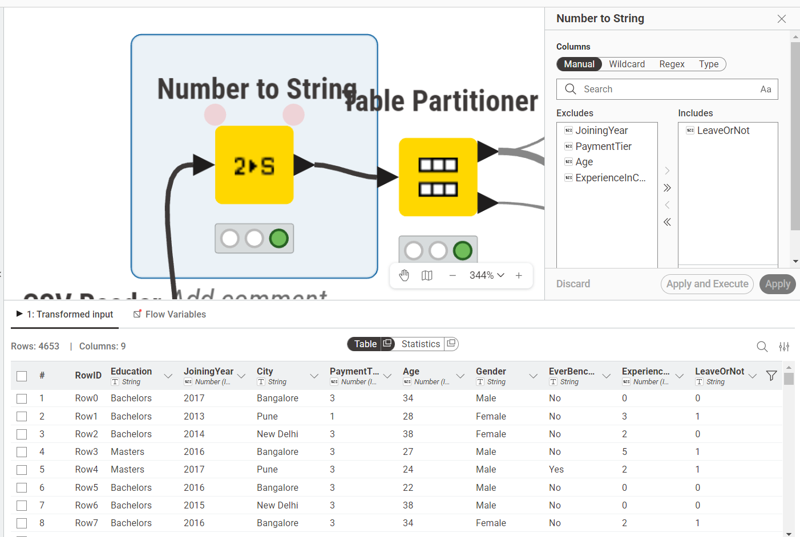
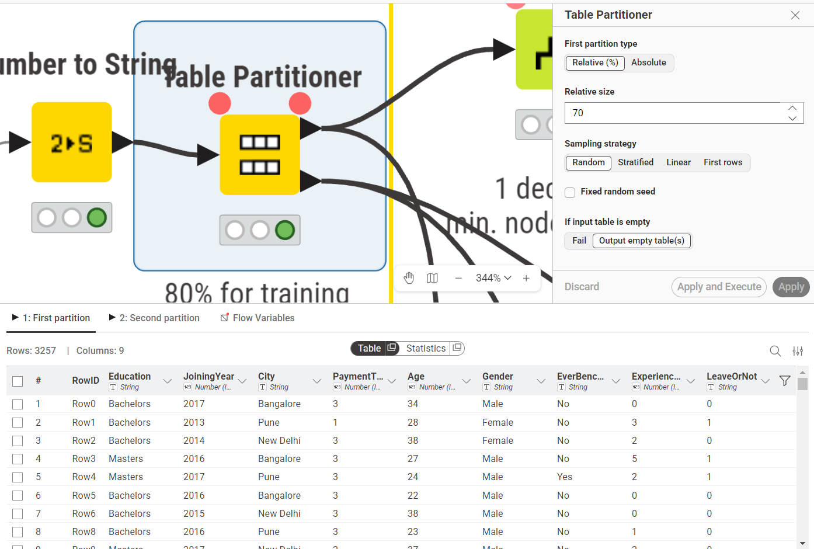
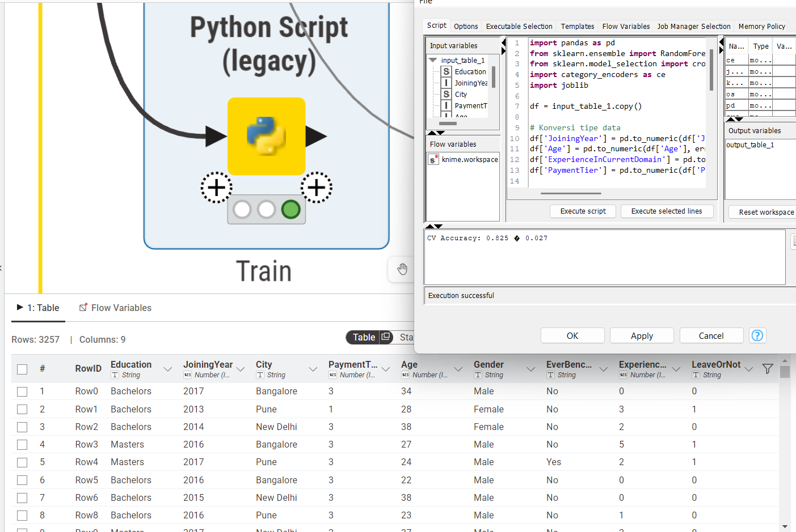
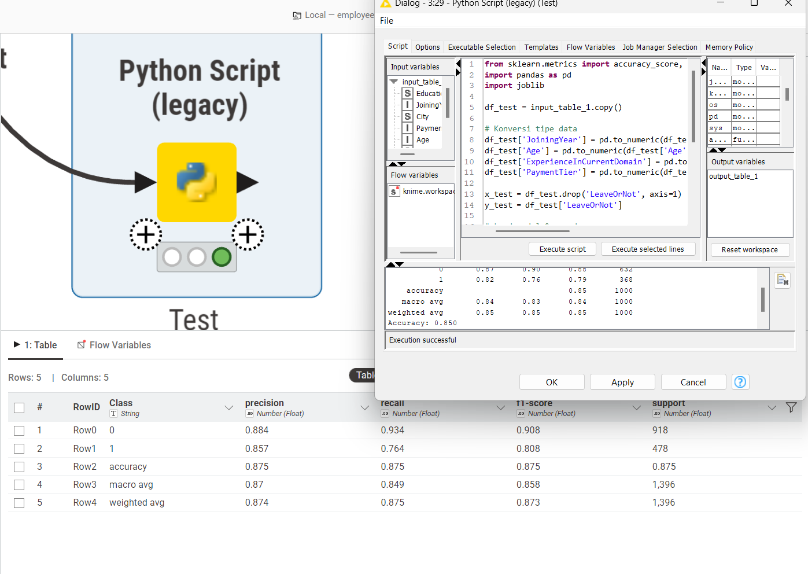
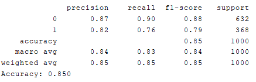

Analisa Data Menggunakan Random Forest#
1. Pendahuluan#
Latar belakang analisis data ini adalah untuk menerapkan metode klasifikasi Random Forest pada dataset karyawan nyata yang bersumber dari Kaggle (Employee Dataset). Dataset ini memuat informasi demografis dan historis karyawan beserta label apakah karyawan tersebut akhirnya resign (LeaveOrNot). Random Forest dipilih karena merupakan metode ensemble yang lebih robust dibandingkan Decision Tree tunggal, mampu menangani overfitting dengan lebih baik, dan menghasilkan performa akurasi yang lebih tinggi melalui kombinasi banyak pohon keputusan.
Tujuan analisis:
Menjelaskan konsep dasar Random Forest secara mendalam, termasuk cara kerja ensemble learning, bootstrap aggregating (bagging), dan mekanisme pemilihan fitur secara acak pada setiap node.
Menyediakan contoh implementasi menggunakan node Python Script (Legacy) di KNIME Analytics Platform dengan memanfaatkan library scikit-learn dan category_encoders.
Membahas konfigurasi model, hasil evaluasi performa, serta perbandingan dengan metode Decision Tree yang digunakan sebelumnya.
2. Konsep Dasar Random Forest#
Random Forest adalah metode pembelajaran mesin ensemble yang diperkenalkan oleh Leo Breiman pada tahun 2001. Metode ini membangun sekumpulan Decision Tree secara bersamaan, di mana setiap tree dilatih pada subset data yang berbeda. Prediksi akhir ditentukan melalui voting mayoritas dari seluruh tree untuk kasus klasifikasi.
Ide dasar Random Forest mengikuti prinsip kebijaksanaan kerumunan (wisdom of crowds): sekelompok model yang beragam namun masing-masing cukup akurat akan secara kolektif menghasilkan prediksi yang lebih baik daripada satu model tunggal, sekalipun model tunggal tersebut sangat akurat.
2.1 Bootstrap Aggregating (Bagging)#
Setiap Decision Tree dalam Random Forest dilatih menggunakan teknik bootstrap sampling, yaitu pengambilan sampel dengan pengembalian (sampling with replacement) dari dataset asli. Jika dataset memiliki sejumlah N baris, maka setiap bootstrap sample juga memiliki N baris, namun beberapa baris mungkin muncul lebih dari sekali sementara baris lain tidak muncul sama sekali. Baris yang tidak terpilih disebut out-of-bag (OOB) samples dan dapat digunakan untuk estimasi error internal tanpa memerlukan validation set terpisah.
Proses ini kemudian dikombinasikan dengan agregasi prediksi dari seluruh tree, sehingga disebut Bootstrap Aggregating atau disingkat Bagging. Bagging secara efektif mengurangi varians model tanpa meningkatkan bias secara signifikan.
2.2 Random Feature Selection#
Selain bootstrap sampling pada baris data, Random Forest juga menerapkan seleksi fitur secara acak pada setiap node saat proses splitting. Ketika sebuah node akan dibagi, algoritme tidak mempertimbangkan seluruh fitur yang tersedia, melainkan hanya memilih subset acak dari total fitur yang ada. Nilai subset yang umum digunakan untuk klasifikasi adalah akar kuadrat dari jumlah total fitur.
Mekanisme ini memastikan bahwa setiap tree tumbuh dengan cara yang berbeda meskipun berasal dari data yang sama, sehingga korelasi antar tree menjadi rendah. Inilah yang membedakan Random Forest dari Bagging biasa: diversitas antar tree yang lebih tinggi menghasilkan ensemble yang lebih kuat.
2.3 Voting Mayoritas#
Setelah seluruh tree selesai dilatih, prediksi untuk data baru dilakukan dengan cara mengumpulkan prediksi dari setiap tree secara individual, kemudian mengambil kelas yang paling banyak diprediksi. Untuk kasus klasifikasi biner seperti LeaveOrNot, setiap tree memberikan satu suara antara kelas 0 (tetap) atau kelas 1 (resign). Kelas dengan jumlah suara terbanyak menjadi prediksi akhir model.
2.4 Entropy sebagai Criterion#
Pada implementasi ini, pemilihan atribut terbaik untuk splitting setiap node menggunakan Entropy sebagai ukuran kualitas. Entropy mengukur tingkat ketidakmurnian distribusi kelas dalam suatu himpunan data. Semakin besar nilai entropy, semakin campur aduk distribusi kelasnya. Nilai entropy nol berarti seluruh sampel dalam node sudah termasuk kelas yang sama, kondisi ideal untuk sebuah leaf node.
Atribut yang menghasilkan penurunan entropy terbesar setelah splitting dipilih sebagai pemisah pada node tersebut. Penggunaan entropy pada scikit-learn dengan parameter criterion='entropy' setara dengan pendekatan yang digunakan pada algoritme ID3 dan C4.5 dalam hal pemilihan fitur.
2.5 Hubungan dengan Decision Tree#
Random Forest pada dasarnya merupakan kumpulan Decision Tree yang dibangun dengan dua sumber randomisasi: bootstrap sampling pada data dan random feature selection pada setiap node. Masing-masing tree tumbuh dengan kedalaman yang dibatasi, namun kelemahan overfitting dari tree tunggal diatasi oleh mekanisme averaging dari seluruh ensemble. Semakin banyak tree yang dibangun, semakin stabil dan akurat prediksi yang dihasilkan, meskipun dengan konsekuensi waktu komputasi yang lebih lama.
3. Dataset yang Digunakan#
Dataset yang digunakan adalah Employee Dataset dari Kaggle, yang berisi 4.653 baris data karyawan dengan 9 atribut. Target klasifikasi adalah kolom LeaveOrNot.
Kolom |
Tipe |
Keterangan |
|---|---|---|
Education |
Kategorik |
Tingkat pendidikan (Bachelors, Masters, PHD) |
JoiningYear |
Numerik |
Tahun karyawan bergabung |
City |
Kategorik |
Kota domisili (Bangalore, Pune, New Delhi) |
PaymentTier |
Numerik (1-3) |
Level gaji (1 = rendah, 2 = sedang, 3 = tinggi) |
Age |
Numerik |
Usia karyawan (tahun) |
Gender |
Kategorik |
Jenis kelamin (Male / Female) |
EverBenched |
Kategorik |
Apakah pernah idle/bench (Yes / No) |
ExperienceInCurrentDomain |
Numerik |
Pengalaman di domain saat ini (tahun) |
LeaveOrNot |
Biner (0/1) |
Target: 1 = resign, 0 = tetap |
Distribusi kelas pada dataset ini tidak seimbang, dengan 3.053 karyawan berlabel 0 (tetap) dan 1.600 karyawan berlabel 1 (resign). Ketidakseimbangan ini ditangani dengan parameter class_weight='balanced' pada model.
4. Implementasi di KNIME#
Workflow KNIME berikut menunjukkan alur analisis data dari pembacaan file CSV hingga evaluasi model Random Forest menggunakan dataset Employee secara penuh (4.653 baris). Workflow terdiri dari node-node bawaan KNIME yang dikombinasikan dengan dua Python Script (Legacy) untuk proses training dan testing model.
4.1 Table Reader (CSV Reader)#
Node Table Reader digunakan untuk membaca file Employee.csv dari direktori lokal. Dataset dimuat dengan seluruh 9 kolom dan 4.653 baris tanpa konfigurasi tambahan karena format file sudah bersih.

4.2 Number to String#
Node Number to String digunakan khusus untuk mengonversi kolom LeaveOrNot dari tipe numerik (integer 0/1) menjadi tipe string. Konfigurasi: hanya kolom LeaveOrNot yang dikonversi, kolom lain dibiarkan dengan tipe aslinya. Konversi ini diperlukan agar KNIME dapat mengenali kolom target sebagai tipe nominal yang kompatibel dengan pipeline node berikutnya.

4.3 Table Partitioner#
Node Table Partitioner membagi dataset menjadi dua partisi: training set dan test set. Konfigurasi yang digunakan:
Ukuran partisi pertama (training set): 80% dari total data (3.722 baris)
Ukuran partisi kedua (test set): 20% dari total data (931 baris)
Strategi sampling: Stratified Sampling dengan group column
LeaveOrNot, untuk memastikan distribusi kelas pada training set dan test set proporsional terhadap distribusi kelas pada keseluruhan dataset
Stratified Sampling memastikan bahwa proporsi kelas 0 (tetap) dan kelas 1 (resign) pada training set mencerminkan distribusi kelas pada keseluruhan dataset, sehingga model tidak bias terhadap kelas mayoritas.

4.4 Python Script (Legacy) - Training#
Node Python Script (Legacy) pertama menerima output training set dari Table Partitioner sebagai input_table_1 dan menjalankan proses encoding, training model Random Forest, serta menyimpan model dan encoder ke disk menggunakan joblib. Berikut adalah script yang digunakan:
import pandas as pd
from sklearn.ensemble import RandomForestClassifier
from sklearn.model_selection import cross_val_score, StratifiedKFold
import category_encoders as ce
import joblib
df = input_table_1.copy()
# Konversi tipe data
df['JoiningYear'] = pd.to_numeric(df['JoiningYear'], errors='coerce')
df['Age'] = pd.to_numeric(df['Age'], errors='coerce')
df['ExperienceInCurrentDomain'] = pd.to_numeric(df['ExperienceInCurrentDomain'], errors='coerce')
df['PaymentTier'] = pd.to_numeric(df['PaymentTier'], errors='coerce')
x_train = df.drop('LeaveOrNot', axis=1)
y_train = df['LeaveOrNot']
# Encode fitur kategorik
cat_cols = ['Education', 'City', 'Gender', 'EverBenched']
encoder = ce.OneHotEncoder(cols=cat_cols)
x_train = encoder.fit_transform(x_train)
# Training model
model = RandomForestClassifier(
criterion='entropy',
n_estimators=300,
max_depth=10,
min_samples_leaf=2,
min_samples_split=2,
class_weight='balanced',
random_state=42
)
model.fit(x_train, y_train)
# Cross-validation
cv = StratifiedKFold(n_splits=5, shuffle=True, random_state=42)
cv_scores = cross_val_score(model, x_train, y_train, cv=cv, scoring='accuracy')
print(f"CV Accuracy: {cv_scores.mean():.3f} +/- {cv_scores.std():.3f}")
joblib.dump(model, 'rfEmployee.pkl')
joblib.dump(encoder, 'encoder.pkl')
output_table_1 = df
Konfigurasi parameter model yang digunakan dijelaskan pada tabel berikut:
Parameter |
Nilai |
Keterangan |
|---|---|---|
criterion |
entropy |
Ukuran kualitas splitting menggunakan Information Gain berbasis Entropy |
n_estimators |
300 |
Jumlah Decision Tree yang dibangun dalam ensemble |
max_depth |
10 |
Kedalaman maksimum setiap tree |
min_samples_leaf |
2 |
Jumlah minimum sampel pada setiap leaf node |
min_samples_split |
2 |
Jumlah minimum sampel untuk melakukan splitting |
class_weight |
balanced |
Menyeimbangkan bobot kelas secara otomatis |
random_state |
42 |
Seed untuk reprodusibilitas hasil |
Parameter class_weight='balanced' secara otomatis menghitung bobot kelas berbanding terbalik dengan frekuensinya, sehingga kelas minoritas (resign) mendapat perhatian lebih selama training. Proses fit_transform pada encoder hanya dilakukan pada training set untuk mencegah data leakage; pada test set digunakan transform saja.
Output dari script training adalah nilai CV Accuracy sebesar 0.825 dengan standar deviasi 0.027, yang menunjukkan bahwa model secara rata-rata mampu mengklasifikasikan 82,5% data dengan benar pada 5-fold cross-validation dengan performa yang stabil antar fold.

4.5 Python Script (Legacy) - Testing#
Node Python Script (Legacy) kedua menerima output test set dari Table Partitioner sebagai input_table_1 dan menjalankan proses loading model, prediksi, serta evaluasi performa. Berikut adalah script yang digunakan:
from sklearn.metrics import accuracy_score, classification_report
import pandas as pd
import joblib
df_test = input_table_1.copy()
# Konversi tipe data
df_test['JoiningYear'] = pd.to_numeric(df_test['JoiningYear'], errors='coerce')
df_test['Age'] = pd.to_numeric(df_test['Age'], errors='coerce')
df_test['ExperienceInCurrentDomain'] = pd.to_numeric(df_test['ExperienceInCurrentDomain'], errors='coerce')
df_test['PaymentTier'] = pd.to_numeric(df_test['PaymentTier'], errors='coerce')
x_test = df_test.drop('LeaveOrNot', axis=1)
y_test = df_test['LeaveOrNot']
# Load model dan encoder
model = joblib.load('rfEmployee.pkl')
encoder = joblib.load('encoder.pkl')
x_test = encoder.transform(x_test)
y_pred = model.predict(x_test)
acc = accuracy_score(y_test, y_pred)
print(classification_report(y_test, y_pred))
print(f"Accuracy: {acc:.3f}")
report = classification_report(y_test, y_pred, output_dict=True)
df_metrics = pd.DataFrame(report).transpose().reset_index()
df_metrics.columns = ['Class'] + list(df_metrics.columns[1:])
output_table_1 = df_metrics
Konversi tipe data numerik dilakukan kembali pada test set karena KNIME dapat meneruskan kolom dalam tipe string setelah melewati node Number to String. Proses ini harus konsisten dengan preprocessing pada training set agar encoder dapat bekerja dengan benar.

5. Ringkasan Alur Workflow#
Urutan |
Node |
Fungsi Utama |
|---|---|---|
1 |
Table Reader (CSV Reader) |
Membaca file Employee.csv |
2 |
Number to String |
Mengonversi LeaveOrNot ke tipe string/nominal |
3 |
Table Partitioner |
Membagi data 80% training / 20% test dengan stratified sampling |
4 |
Python Script (Legacy) - Training |
Encoding, training Random Forest, menyimpan model |
5 |
Python Script (Legacy) - Testing |
Loading model, prediksi, evaluasi performa |
6. Hasil Evaluasi Model#
6.1 Cross-Validation (Training Set)#
Evaluasi pertama dilakukan menggunakan 5-fold Stratified Cross-Validation pada training set (3.722 baris). Hasil yang diperoleh:
CV Accuracy: 0.825
Standar Deviasi: +/- 0.027
Nilai standar deviasi yang relatif kecil menunjukkan bahwa performa model stabil antar fold dan tidak terlalu sensitif terhadap variasi partisi data.
6.2 Evaluasi pada Test Set#
Evaluasi akhir dilakukan pada test set yang belum pernah dilihat model (931 baris, 20% dari total data). Hasil classification report yang diperoleh adalah sebagai berikut:
Class |
Precision |
Recall |
F1-Score |
Support |
|---|---|---|---|---|
0 (Tetap) |
0.87 |
0.90 |
0.88 |
632 |
1 (Resign) |
0.82 |
0.76 |
0.79 |
368 |
accuracy |
0.85 |
1.000 |
||
macro avg |
0.84 |
0.83 |
0.84 |
1.000 |
weighted avg |
0.85 |
0.85 |
0.85 |
1.000 |
Accuracy keseluruhan pada test set adalah 0.850 (85.00%).

6.3 Interpretasi Hasil#
Model berhasil mengklasifikasikan 85% data test dengan benar. Beberapa poin yang dapat diinterpretasikan dari classification report:
Precision kelas 0 sebesar 0.87 berarti dari seluruh prediksi kelas 0 (tetap), 87% memang benar-benar karyawan yang tetap. Recall 0.90 berarti model berhasil mendeteksi 90% karyawan yang sesungguhnya tetap.
Precision kelas 1 sebesar 0.82 berarti dari seluruh prediksi kelas 1 (resign), 82% memang benar-benar karyawan yang resign. Recall 0.76 berarti model berhasil mendeteksi 76% karyawan yang sesungguhnya resign.
Kinerja pada kelas 1 lebih rendah dibandingkan kelas 0, yang merupakan konsekuensi wajar dari ketidakseimbangan kelas (3.053 vs 1.600 sampel). Meskipun sudah ditangani dengan
class_weight='balanced', kelas minoritas tetap lebih sulit diprediksi.Selisih antara CV Accuracy (0.825) dan Test Accuracy (0.850) yang sangat kecil menunjukkan bahwa model generalisasi dengan baik dan tidak mengalami overfitting yang signifikan.
7. Perbandingan dengan Decision Tree#
Untuk memberikan gambaran yang lebih komprehensif, berikut adalah perbandingan performa antara model Random Forest yang diimplementasikan pada laporan ini dengan model Decision Tree yang dibangun menggunakan node Decision Tree Learner di KNIME pada dataset yang sama. Decision Tree menggunakan partisi 67% training / 33% test dengan Gain Ratio sebagai quality measure dan MDL sebagai pruning method, sedangkan Random Forest menggunakan partisi 80% training / 20% test melalui Python Script.
Metrik |
Decision Tree |
Random Forest |
|---|---|---|
Overall Accuracy |
83.36% |
85.00% |
Overall Error |
16.64% |
15.00% |
Cohen’s Kappa |
0.6158 |
- |
Correctly Classified |
1.157 dari 1.388 |
850 dari 1.000 |
Incorrectly Classified |
231 dari 1.388 |
150 dari 1.000 |
Dari perbandingan tersebut, beberapa temuan dapat diidentifikasi:
Random Forest menghasilkan akurasi 85.00%, lebih tinggi 1.64 poin persentase dibandingkan Decision Tree yang menghasilkan akurasi 83.36%. Peningkatan ini menunjukkan bahwa mekanisme ensemble pada Random Forest berhasil memperbaiki kemampuan generalisasi model.
Overall Error Random Forest sebesar 15.00% lebih rendah dibandingkan Decision Tree sebesar 16.64%, yang berarti Random Forest membuat lebih sedikit kesalahan klasifikasi secara proporsional.
Nilai Cohen’s Kappa Decision Tree sebesar 0.6158 termasuk dalam kategori kesepakatan moderat hingga substansial. Nilai ini mengindikasikan bahwa model Decision Tree sudah cukup baik dalam menghindari klasifikasi yang bersifat kebetulan semata, meskipun masih berada di bawah performa Random Forest.
Peningkatan akurasi dari Decision Tree ke Random Forest sejalan dengan ekspektasi teoritis, karena Random Forest menggabungkan 300 tree untuk menghasilkan prediksi yang lebih stabil dibandingkan satu Decision Tree tunggal.
Secara keseluruhan, Random Forest terbukti memberikan performa yang lebih baik pada dataset Employee ini, dengan trade-off berupa model yang lebih sulit diinterpretasikan dan waktu komputasi yang lebih lama dibandingkan Decision Tree.
8. Kelebihan dan Kekurangan Random Forest#
Kelebihan:
Lebih robust terhadap overfitting dibandingkan Decision Tree tunggal berkat mekanisme bagging dan random feature selection.
Memberikan estimasi feature importance secara otomatis berdasarkan kontribusi setiap fitur dalam mengurangi impurity di seluruh tree.
Mampu menangani dataset dengan dimensi fitur yang tinggi dan ketidakseimbangan kelas.
Stabil terhadap noise dan outlier karena keputusan diambil dari agregasi banyak tree, bukan satu tree tunggal.
Dapat memperkirakan error secara internal menggunakan out-of-bag samples tanpa memerlukan validation set terpisah.
Kekurangan:
Lebih sulit diinterpretasikan dibandingkan Decision Tree tunggal karena keputusan dihasilkan oleh ratusan tree sekaligus.
Waktu komputasi dan penggunaan memori lebih besar, terutama ketika jumlah tree (n_estimators) dan ukuran dataset besar.
Kurang optimal untuk data dengan hubungan fitur yang sangat linear atau kontinu, di mana model seperti regresi logistik bisa lebih efisien.
Prediksi tidak dapat diekstrak sebagai aturan yang mudah dipahami, berbeda dengan Decision Tree yang dapat divisualisasikan secara intuitif dalam bentuk struktur pohon.